HeuristicsMiner: Users Guide
A.J.M.M. (Ton) Weijters
Department of
Technology Management,
Eindhoven University
of Technology,
P.O. Box 513,
NL-5600 MB Eindhoven
The Netherlands.
E-mail: a.j.m.m.weijters@tm.tue.nl
Introduction
This document contains
information about the HeuristicsMiner plug-in for ProM (version 4.0).
For the PDF-version of this document see http://is.tm.tue.nl/staff/aweijters/hm40.pdf. ProM is a general Process Mining
framework that has been implemented in Java. For more information about the
ProM framework, other available plug-ins, how to develop your own plug-in, how
to down load the ProM framework, etc. we refer to the process mining home page
htpp://www.processmining.org or the ProM web page: http://is.tm.tue.nl/research/processmining/tools.htm).
The HeuristcsMiner
plug-in described in this document is more or less an replacement for the older
heuristics mining tool Little Thumb (Weijters, A.J.M.M., & Aalst, W.M.P.
van der (2003). Rediscovering workflow models from
event-based data using Little Thumb (http://is.tm.tue.nl/staff/aweijters/ICAE_v5.pdf). Integrated
Computer-Aided Engineering, 10(2), 151-162). The most important characteristic of the HeuristicsMiner is the robustness
for noise and exceptions. Because the HeuristicsMiner is based on the
frequency of patterns it is possible to focus on the main behaviour in the
event log. More details about the implementation and performance results are
available in the Beta working paper WP 166 (http://is.tm.tue.nl/staff/aweijters/WP166.pdf). Thre is also more information in this paper
about a new feature of the HeuristicsMiner: the possibility to mine some long
distance dependency relations (non free choice constructs).
The remainder of this
Users Guide illustrates the mining capacity of the HeuristicsMiner. We will
explain the basic ideas behind the HeuristicsMiner tool and the different
measurements and parameters that are used in the tool, and how we can expect
the parameters can be used to influence the amounts of details in the mined
process models.
A first acquaintance with the
HeuristicsMiner Plug-in
Mining without noise
To illustrate some
properties of the heuristicsMiner plug-in we will use an event log (or
transaction log) generated by the proces model given in Figure 1[1].
The event log (HeuristicsMinerUsersGuideVb1.xml) contains information about 1000 cases. For
each case, the performed tasks and the and the moment of completion are
recorded in the event log. For more information about the ProM XML-event log
format we refer to Appendix A.
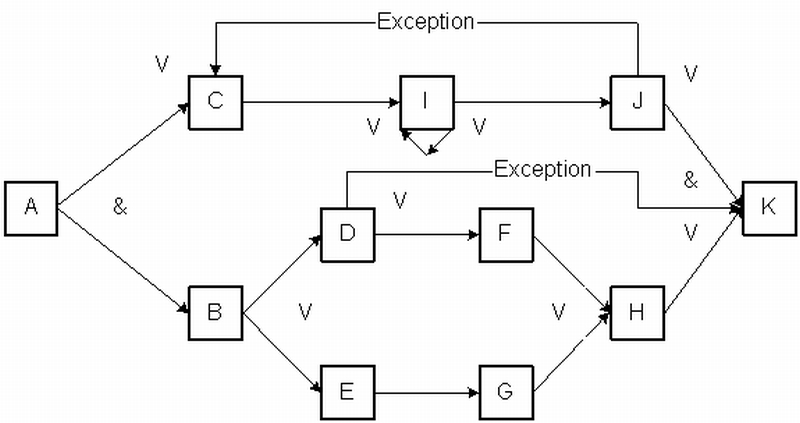
Figure 1: The HeuristicsNet process model that is used
to generate the event log HeuristicsMiningUsersGuideVb1.xml
The squared boxes
represents tasks. The arcs from A to C and B in combination with the & indicate that after performing tasks A, both
tasks C and B can be performed in parallel. After performing task B, task D or
E has to be performed (indicated with a V)
The same model
representation as depicted in Figure 1 is also used in the HeuristicsMiner
plug-in. For each task an Input and Output expression is given. For instance,
the Input expression for B is [A] and the Output expression is [D V E]. In Figure 1 the Input expression for K is
not totally clear but it appears to be [[H V
D] & J][2].
Task I can be performed many times (a direct loop). There is also a loop from
task J to task C, but this loop is rarely executed. Normally task K is
performed after finishing task J. Also, skipping task F and H after performing
task D is an exception. For people more familiar with the Petri net process
model formalism we refer to Figure 2 for an equivalent Petri net. Remark that
this Petri Net contains hidden task (D1, D2, and D3).
Given the process model of Figure 1 and 2 , an
example of a possible sequence of activities (or events) is the sequence
ABCDIHIJK. A sequence of activities belonging to the same case, is called a
trace. The event log in the HeuristicsMiningUsersGuideVb1.xml contains 1000 random generated traces. On the
next pages we will demonstrate what the HeuristicsMiner will do with the 1000
traces in the event log.

Figure 2: A Petri net for the HeuristicsNet of Figure 1
First start the ProM
program; the result will be something like the following screen.
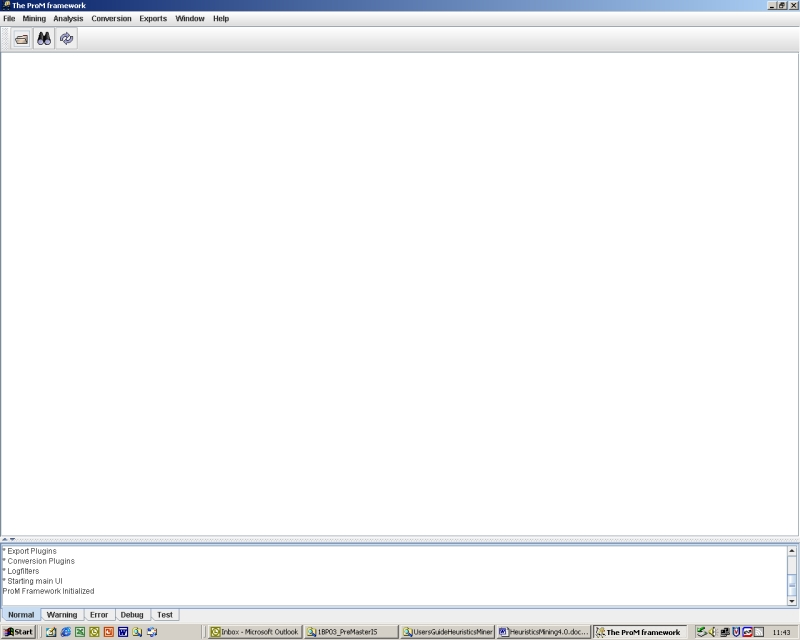
Figure 3: screen after starting ProM.
Before we can start
mining we have to open a log file. Use File
> Open XML Log file > Browse
and navigate to the file HeuristicsMiningUsersGuideVb1.xml (the exact place depends on your
installation). If everything goes right the result would be the screen given
below:
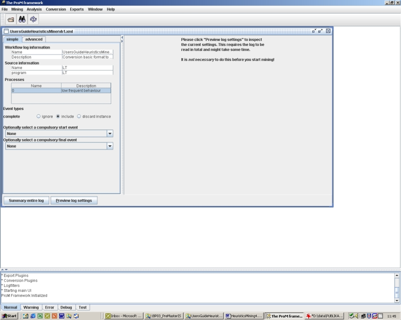
Figure 4: The screen before we start mining.
Left there is
information about the loaded event log. Within the [Simple tab-page] we can
select the Event types that will be used during mining. If we use the [Summary
entire log] button you will get detailed global information about the loaded
log. The [Preview log settings] will gave you detailed information about the
individual traces. Because we are dealing with an artificial log, these
information is more or less trivial.
The [Advanced
tab-page] can be used to filter the loaded log. More information about these
options is in the general starters manual of ProM. However, in our first mining
session we will use the default setting for all parameters. That means that we
can directly start the mining process by using the mining option as indicated
in Figure 5. The result is a screen with parameters of the
HeuristicsMiner as given in Figure
7.
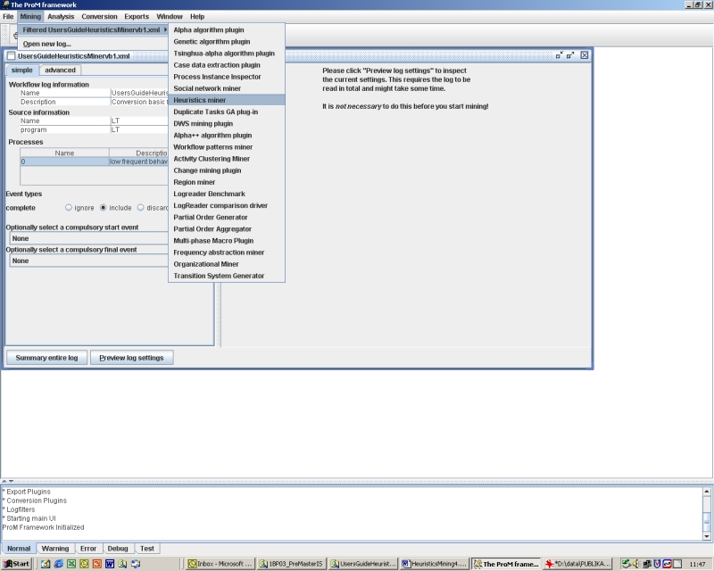
Figure 5: Starting the HeuristicsMiner.
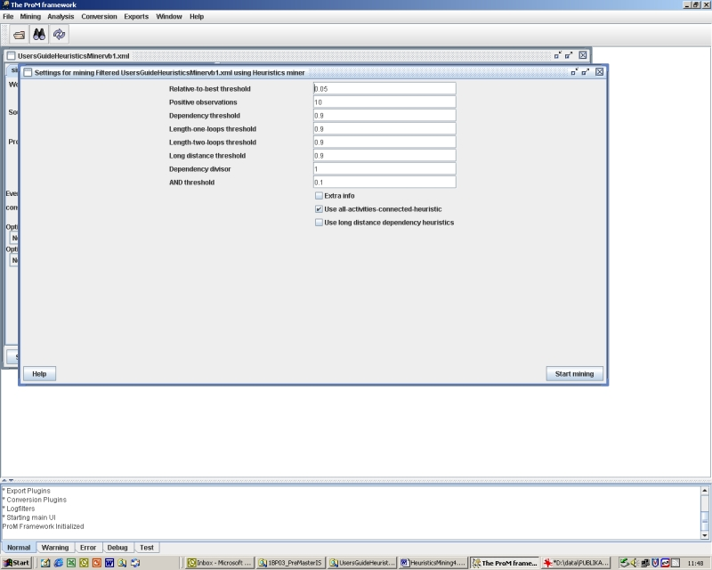
Figure 6 The HeuristicsMiner parameter screen.
In this first mining
session we will use the default parameter setting. The only thing we have to do
is pushing the [start mining] button. The graphical result is depicted in Figure 7. By manipulating the ^ v
arrows of each of the boxes we can minimize or maximize the areas. In the
graphical representation area we can use the right mouse click to get extra
options (for instance the option to print the graphical representation, to zoom
in or out, and showing also the XOR/AND split/join information ). Below we will
look in more detail to information in the different areas. Let we first focus
on the graphical representation. The graphical result as given in Figure 7 is very similar to the HeuristicNet of Figure 1. The squared boxes
are again the tasks. The arcs between tasks represent dependency relations. The
label of an arc is the result of the parsing of the traces in the log. We can
use the mined model to check if the traces in the log can be parsed by the
model. For instance, we can parse the trace “A C B D I J F H K”. For the
parsing of this trace we need the arcs A>C, A>B, B>D, C>I, I>J,
D>F, F>H, J>K, H>K. The label of an arc indicates the number of
times the connection is used during the parsing of all traces of the event log.
For instance, both connection from A to C and from A to B are have the value
1000 (equal to the number of traces in the event log). That indicates that A
has an AND-split to B and C. Information about the splits and joins can be
displayed by using the right mouse button in combination with the [display
split/join semantics]. If we use this option also the dependency values are
displayed. The dependency measure indicates how certain we are that there is a
dependency relation between two activities A and B. I high value (close to 1)
means that we are very sure that there is a dependency relation between the
connected tasks. For a definition of the dependency relation we refer to WP166.
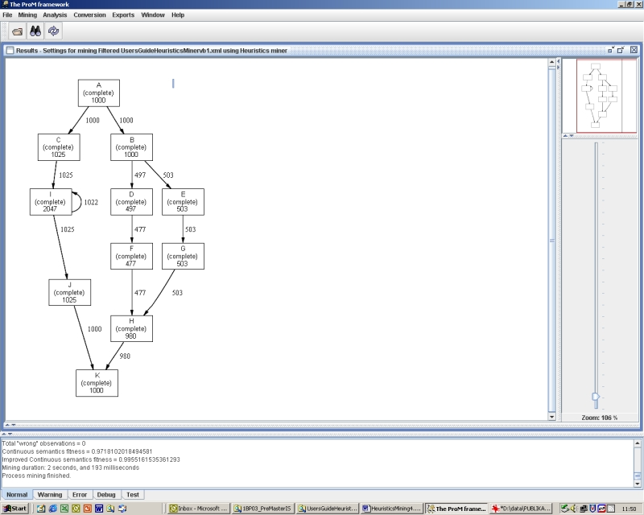
Figure
7: The process model mined with the
HeuristicsMiner.
|
** Starting plugin import ** * Mining Plugins * Analysis Plugins * Import Plugins * Export Plugins * Conversion Plugins * Logfilters * Starting main UI ProM Framework Initialized Please wait while initializing the Log.... finished initializing. Please wait while initializing the Log.... finished initializing. Please wait while initializing the Log.... finished initializing. Please wait while initializing the Log.... finished initializing. Please wait while initializing the Log.... finished initializing. Start process mining. Start Heuristics mining ... THRESHOLDS: Relative-to-best threshold
0.05 Positive observations 10 Dependency threshold 0.9 Length-one-loops threshold 0.9 Length-two-loops threshold 0.9 Long distance threshold 0.9 Dependency divisor 1 AND threshold 0.1 Extra Info false Use all-events-connected-heuristic true Use long distance dependency heuristics false Number of process instances (cases) = 1000 Number of audit trail entries (events) = 10057 Total number of connections = 13 Total "wrong" observations = 0 Continuous semantics fitness = 0.9718102018494581 Improved Continuous semantics fitness = 0.9955161535361293 Mining duration: 2 seconds, and 293 milliseconds Process mining finished. |
Figure
8: Information in the text screen.
In Figure 8 we see the information given in the text screen.
After the calls for the different plug-ins we see information about the
parameters used during this mining session, some information about the event
log (1000 process instances and 10057 tasks tokens), the number of connections
(13), the number of wrong observations (0), the fitness of the model
(Continuous semantics fitness = 0.972
Improved Continuous
semantics fitness = 0.996), and finally the mining time (2.4 seconds). For a
noise free log the goal of the mining algorithm is to find an optimal process
model in the sense that is in accordance with the information in the event log.
Testing if all traces can be parsed by the mined process model is one
possibility to check this. In a simple fitness measure we just calculate the
number of correct parsed traces divided by the number of traces. However, this
fitness measure appears to naive. First of all, if for one process model the
parsing usually get stuck at many places of a trace and in an other process
model there is only one error at the end of the traces we prefer the second
one. Moreover, we like a proper completion of the parsing process (i.e. if the
end tasks is activated there are no hanging activities in the process model).
The continuous semantics fitness is based on the intuitions formulated
above. We don’t stop the parsing if an
error occur. The error is recorded, but the parsing goes on. That means that
this fitness measure is based on the number of successfully parsed tasks tokens
(10057) instead of the number of parsed traces (1000). However, this means that the fitness of a
model in which everything is allowed is equal to 1.0. In the improved
continuous fitness there is a punishment for extra allowed behaviour. For more
information about this measurements see the Analysis
> HeuristicsNet > Fitness
plugin. As indicated above, a simpler fitness measure is based on the number of
traces (cases) in the log that can be successfully parsed by the model
(finishing without hanging task in the process model). We can calculate this
fitness by using the fitness calculation plug-in. This fitness appears 0.956.
This means that in our example 956 traces out of 1000 traces can be
successfully parsed.
But what about the
other 44 traces? If we look at the orginal HeuristicsNet of Figure 1 that is used to
generate the event log HeuristicsMiningUsersGuideVb1.xml we see that there are connections that are
hardly used (indicated with the label “Exception”).
If we use the default
parameter setting (Use all-events-connected-heuristic = true) only dependency
relations which are really necessary to connect all task into a workflow net
are and always accepted. Extra
connections are only accepted if
(i) the positive
observations are above the threshold and if (ii) the dependency value is
above the threshold and if (iii) the difference between the new dependency
value and the first accepted one is less than the relative to best threshold.
Remark that there is a strong correlation between the positive observation
threshold and the
dependency threshold.
For instance, choosing a dependency threshold of 0.9 means that we need more
than 10 positive observation of A directly followed B to accept an dependency
between A and B. If we are interested in more exceptional behaviour we can
chance this values. As an example we choose the Positive observations threshold
= 3, Dependency threshold = 0.8 and a
Relative-to-best threshold = 0.2. To do this we first close the
Heuristics Miner Result frame (the cross-symbol at the right upper corner of
the frame) and than update the two parameters with the values as indicated
above (3, 0.8, and 0.2). Figure
9 is the result of the mining approach with the updated
parameter setting.
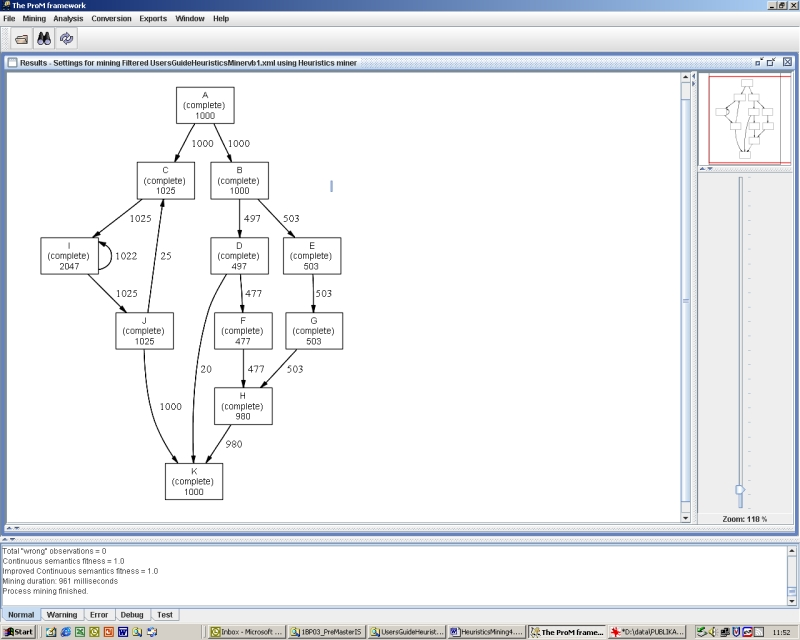
Figure 9: The mining result with Positive observations
threshold = 3, Dependency threshold = 0.8 and a Relative-to-best threshold = 0.2. Also low frequent dependency
relations are mined and represented in the graph.
If we look to the
dependency graph in Figure
9 we can see that there two new connections in the
dependency graph; a connection from task D directly to task K, and a extra loop
from task J to task C. Both connections are hardy used (20 times and 25 times).
Both the fitness measurements are equal to 1.0 (all traces of the log can be
correct parsed by the mined HeuristicsNet). If we look to the dependency graph
we can see that tasks K has three ingoing arcs: from task J, task D and task K.
We can use the right mouse button in combination with the [display split/join
semantics] to show that K always needs J and only one of the tasks D and H
(i.e. In K = (J & (D v H))).
So far the first
mining results of the HeuristicsMiner. However, the event log used in this
first session is a noise free log. In the next section we will investigate the
behaviour of the HeuristicsMiner in case of a log with noise.
Mining an event log with noise
In this section we try
to use the HeuristicsMiner on an event log with noise. In the event log HeuristicsMiningUsersGuideVb1noise5.xml 5% of the traces of the original event log HeuristicsMiningUsersGuideVb1.xml are
deformed by removing one or more events out of the trace, interchanging two
events, or by removing some tasks from
the begin or the end of a trace. The types of deformation are randomly
distributed over the traces of the original event log. Specially, the
combination of low frequent patterns (exceptions) and noise are difficult to
mine: how to discriminate between noise and low frequent behaviour? But we
don’t scare away. In a first approach we use the HeuristicsMiner plug-in with
the default parameter setting to see what happens. Close the HeuristicsMiningUsersGuideVb1noise5 event log and load the HeuristicsMiningUsersGuideVb1noise5 log. Use the HeuristicsMiner with default
parameters. The result is given in Figure
10.
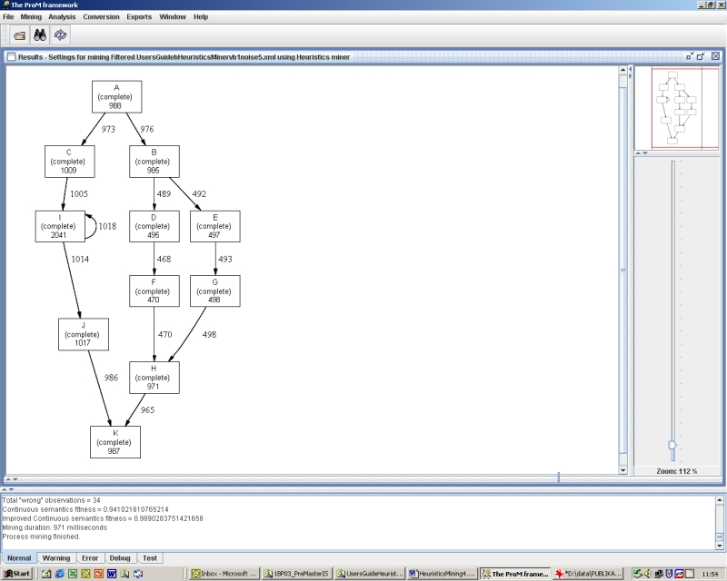
Figure 10: Mining result on the log with 5% noise
(HeuristicsMiningUsersGuideVb1noise5.xml) with the default parameters setting.
It is clear that the
dependency graph has the same connections as the noise free dependency graph
(i.e. de resulting dependency graph based on the noise free material). The new
dependency measures are hardly lower than the dependency measures of the noise free graph (use the right mouse button
in combination with the [display split/join semantics] to show the dependency
measures). Remark that the parsing
information in Figure 10 is influenced by the noise. For instance task A
appears 988 times in the log, task C 1009 times, and task B 985 times. If we
look to these values there is a dissimilarity between them and the parsing
information of the labels of the regarding arcs (i.e. 973 and 976). If we look
to the area with information about the mining process we see the information as
given in Figure 11.
|
Number
of process instances (cases) = 1000 Number
of audit trail entries (events) = 9958 The
BEGIN task is possible not unique? Use
the 'Add an artificial BEGIN-task' option! The
END task is possible not unique? Use
the 'Add an artificial END-task' option! Total
number of connections = 13 Total
"wrong" observations = 34 Continuous
semantics fitness = 0.941021610765214 Improved
Continuous semantics fitness = 0.9890283751421658 Mining
duration: 1 second, and 723 milliseconds Process mining finished. |
Figure 11: Process information for default parameters
setting and the log with 5% noise.
Because some tasks are
removed from the begin or the end of a trace the begin and end tasks are no
longer unique. Also the number of 34 “wrong” observations is an indication for
noise. If for instance the dependency relation between task A and C is based on
222 observations of A directly followed by C and 2 times they other way around,
than there are 2 “wrong” observations. Remark that even in the first mining
session (with an event-log without noise)
an incomplete process model was induced, but the number of “wrong”
observations was 0 (Figure
8).
In Figure
11we see that the Continuous semantics fitness = 0.941
and the Improved Continuous semantics fitness = 0.989.We can
calculate the ProperCompletion-fitness Analysis > HeuristicsNet > Fitness plugin.
This fitness appears 0.909. This means that in our example 909 out of 1000
traces can be successfully parsed (the 45 low frequent traces and about 50
traces (5% of 1000) with noise).
So far the
HeuristicsMiner seems robust for noise. But what happens when we try to mine
the exceptions? For this purpose we will use the same parameters setting as
during the mining of exceptions in the noise free log (i.e. Positive
observations threshold = 3, Dependency threshold = 0.8 and a Relative-to-best threshold = 0.2).
But we also saw that
the noise caused a warning (Figure
11) that there is not an unique START and END-task. In
this situation it make sense to add and artificial START and END. We can do
this by first closing the HeuristicsMiner and using the [advanced] tab page of
the event-log loader. In the [default log-filter options] we first select the “Add artificial START task log
filter” and than use the [add]-button in combination with the default values.
Do the same to add an artificial END-task.
The result of mining
of the updated event log is given in Figure
12.
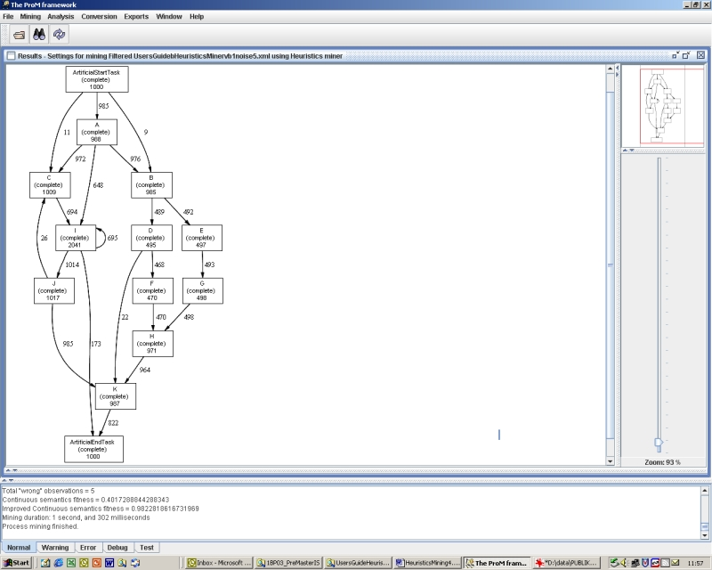
Figure 12: The mining result with an artificial BEGIN
and END-task, Positive observations threshold = 3, Dependency threshold = 0.8
and a Relative-to-best threshold = 0.2
on the event log with 5% noise. Also low frequent dependency relations are
mined and represented in the graph.
If we look to Figure 12 we see that also the low frequent and noise patterns
are represented in the graph. Total number of connections = 21 and the fitness
is low (Continuous semantics fitness = 0.402, Improved Continuous semantics
fitness = 0.982). However, if we chance the number of positive observations
from 3 to 5 the result is the simpler HeuristicsNet as depicted in Figure 13. We prefer this result above the previous result
because the model is simpler and fitness of this model is much higher (i.e.
Continuous semantics fitness = 0.968, Improved Continuous semantics fitness =
0.995).
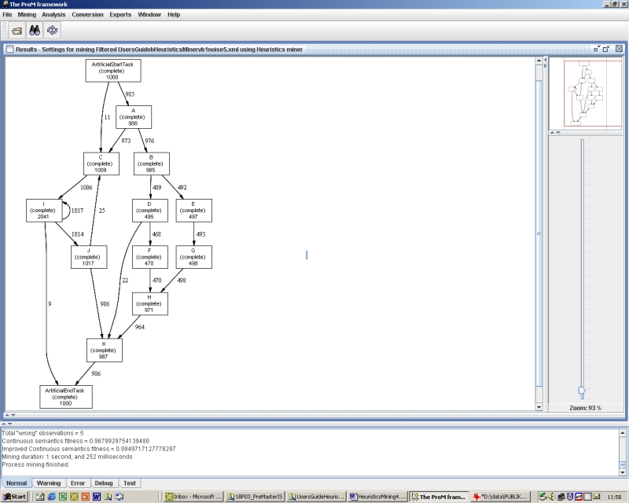
Figure 13: The mining result with an artificial BEGIN
and END-task, Positive observations threshold = 5, Dependency threshold = 0.8
and a Relative-to-best threshold = 0.2
on the event log with 5% noise.
So far a first
illustration of the HeuristicsMiner. The result of the HeuristicsMiner is a
HeuristicsNet. Below we will shortly show how we can combine the Heuristics
Miner plug-in with other plug-in in the Prom framework. First we will use the
Conversion plug-in to translate a HeuristicsNet to a Petri Net. Starting point
is the HeuristicsNet as given in Figure
9. Use the Conversion
> Heuristics net > Heuristics net to Petri net option. Remark that the result (Figure 14) is exactly the Petri net of Figure 2. Even the dummy tasks (D1, D2, D2) are inserted (and
one extra dummy task).
After the conversion
it is possible to use all the plug-ins that are available for Petri nets. Use
the Analysis>Petri net to get a list of possible analysis options for Petri
nets. For more information about these plug-ins see the accompanied
documentation. Have also a look to the Export possibilities in the ProM
framework. For instance, it is always possible to save the dot-file of a
graphical representation.
The ProM frame work is
dynamical. That means that periodical new plug-ins becomes available. It is
also possible to develop your own plug-ins and make them available for other
ProM users.
So far this first
acquaintance with the HeuristicsMiner and possible the ProM framework.
***
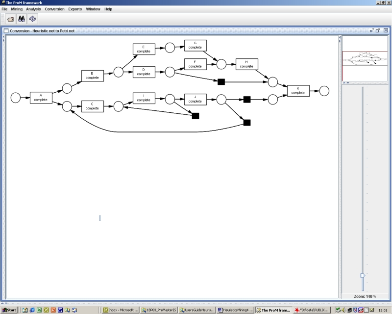
Figure 14: Result of the conversion of the HeuristicsNet
to a Petri net.